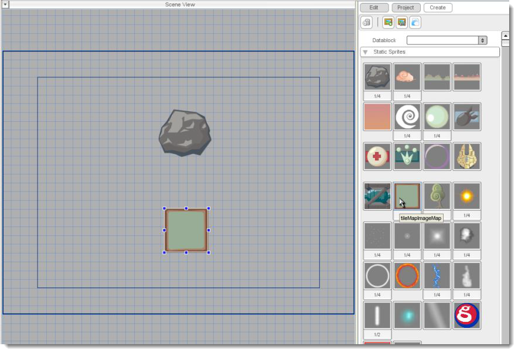
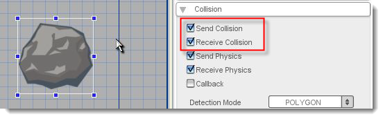
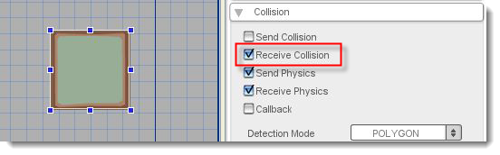
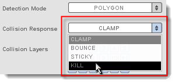
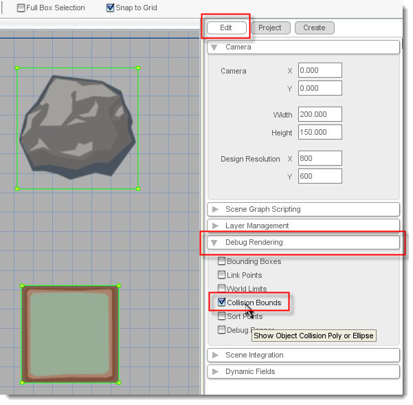
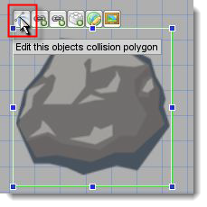
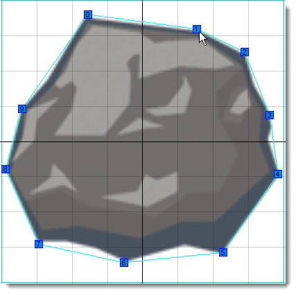
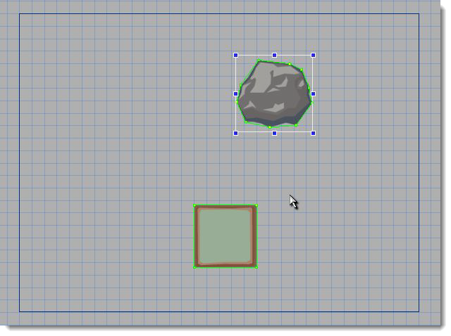
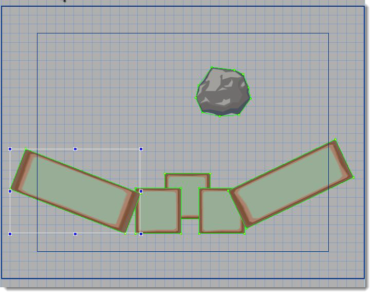
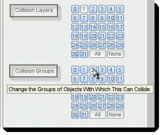

Torque 2D - Collisions Tutorial
In this tutorial, you'll learn how to set up collisions and collision detection in Torque 2D (T2D). You'll need to use the collision detection system any time you want to check if one of your game objects hits another. This can be used for all sorts of things, from making balls bounce, to making missiles explode, to opening doors when the player reaches them.
To prepare for this tutorial, run Torque 2D and load the TutorialBase
project (if it's not already loaded) by choosing Open Project... from the
file menu and selecting games/TutorialBase/project.t2dProj. Next, create a new scene by
selecting New Scene from the file menu. Finally,
choose Save As
from the file menu to save this
new scene. Also, be sure to save your scene with the name
"CollisionTutorial".
Now that we've got a blank slate, it's time to bring some objects into the scene so we can make them collide. Select the Create tab in the Scene Editor and open the Static Sprites section. Drag an asteroid and a block (from the tileMapImageMap) into the scene as shown below.

Finally, we're going give the asteroid some gravity so later we can make it collide with the other objects. To do this, select the asteroid by clicking on it, then choose the Edit tab on the right side of the Scene Editor. Scroll down until you see the Physics section, then expand it by clicking on the arrow. In order to make the asteroid fall downward, change the Constant Force Y property to "40" and press Enter. Save your scene as "CollisionTutorial" and preview the scene by pressing the Play Scene button in the toolbar. For now, the asteroid just falls down over the crate. We're going to just set up a few basic kinds of collision in the upcoming sections.
Select the asteroid sprite in the Scene View and open the Collision section in the Edit tab. All the collision properties that we are going to use are in this section. For now, just turn on the asteroid's collision detection by selecting Send Collision and Receive Collision. Next, select the crate and check only Receive Collision. Save the scene and press Play Scene to watch the action.


Okay, admittedly that wasn't much in the way of action; the asteroid just stops when it hits the crate. However, the main thing to note is that they are reacting to each other. Let's see what other effects we can set up for collisions...
Now that the block and the asteroids respond to each other, we can play with some of our other options. The Response Mode dropdown contains the possible responses that objects can have to collisions. Select the asteroid and take a look at the Response Mode options. Notice that we were using CLAMP. Here is a brief description of the possibilities:
BOUNCE: A simple, pong-style bouncing effect.
CLAMP: The colliding object slides along the surface it hits. This is good for surfaces that the player moves along.
STICKY: The colliding object completely stops.
KILL: The colliding object is deleted.
RIGID: The colliding object will react using built-in rigid body physics.
Let's create examples for a few of our response options. Change the crate's response mode to KILL and preview the scene. Now it disappears when the asteroid hits it. Now, change the asteroid's response mode to BOUNCE and preview again. The crate still disappears, only this time, the asteroid bounces. Make sure to set the crate back to CLAMP when you're done.

Deselect all the objects on the screen by clicking on a blank area in the Scene View. In the Edit tab, you'll now see the Debug Rendering section. Open it and select Collision Bounds as shown below.

You can now see the collision bounds (in green) for all the objects on the screen. Specifically, 'collision bounds' are the shapes that Torque uses to check if an object collides with another object. Notice that currently they are all squares. Thankfully, there is an easy way to make our objects collide more realistically: custom collision polygons!
We'll set up the asteroid to use polygon collision. What we want to do is change its 'collision polygon'. An object's collision polygon is the shape that is used to determine if it collided with something. Select the asteroid. Notice that in the Edit tab the Detection Mode for it is already set to POLYGON. Move your mouse over the asteroid's sprite in the Scene View, and click on the far left widget that appears above it - Edit this object's collision polygon as shown below. From here, you will want to use the collision editor to modify your scene object's collision polygon. If you're unsure on how to do this click here.If you're unsure on how to do this click here.

For game purposes, something similar to what you see below will work fine:

Now if you place your box slightly to the left of the the asteroid as shown below, it should bounce off at an angle when you run the game.

Finally, if you want to give the asteroid some space to bounce around, you can copy and paste more blocks and even stretch and rotate them to make an environment for the asteroid to bounce in as shown below. To change scale and rotation, modify the the Size and Rotation values under the Edit tab with the object selected.

Usually, you don't want every object in your game colliding with every other object. For instance, you probably don't want a player's ship to collide with its own missiles, and likewise you might not want objects in the foreground to collide with objects in the background. That's what the Collision Layers and Collision Groups properties are for.
As far as collisions go, Collision Layers and Collision Groups operate in a very similar way. They work together to determine which objects can collide with each other. By default, an object collides with objects in all layers and in all groups. By default, all objects start on layer zero and in group zero. To see Collision Layers and Collision Groups in action, we're going to make the asteroid not collide with objects in layer 1 or objects in group 2. Select the asteroid then, in the Edit tab, click the 1 button in its Collision Layers property to turn it off and then click on the 2 in its Collision Groups.

Now, select the block object and go to the Scene Object section in the Edit tab. In there, change the Layer to "1". Now it is on layer one, and the asteroid will not collide with objects on layer one. The last thing we have to do is make a block not collide with objects on layer zero. Go to a block's Collision properties and click off the 0 in Collision Layers. Press Play Scene to see the asteroid and the block not collide.
To see Collision Groups in action, change another block's group to "2" in Scene Object properties and turn off the 0 in its Collision Groups. Notice that when one object touches a second object, the second object must be in the correct layer and group to cause a collision... just one or the other isn't enough.
The four check boxes at the top of an object's collision properties, Send/Receive Collisions and Send/Receive Physics define the object's participation in the collision system.
Using these properties individually (for example, turning Send on but leaving Receive off) can have some unpredictable effects. Often it will be necessary for you to experiment to get these settings right. Here's a basic explanation...
Objects that have "send collision" active can be thought of as active colliders while objects that have "receive collision" active can be thought of as passive colliders. A collision will only be detected between objects if one of the objects is an active collider and the other is a passive collider. Keep in mind that an object can both send and receive collisions.
Send and receive physics are treated slightly differently. Send physics dictates whether or not the object's default physics response will be used when it is sending the collision. Receive physics dictates whether or not the object's default physics response will be used when it is receiving the collision.
This tutorial has covered some of the basics of collisions in T2D. Collisions can still be quite complicated; you will probably have a fair amount of experimenting to do in order to set them up properly in your game. Generally, a completed game will do a lot of collision handling in script. The features here are good for setting up prototypes and can often be used in your finished product; however, you will almost certainly have to handle some part of your collisions outside the Scene Editor.